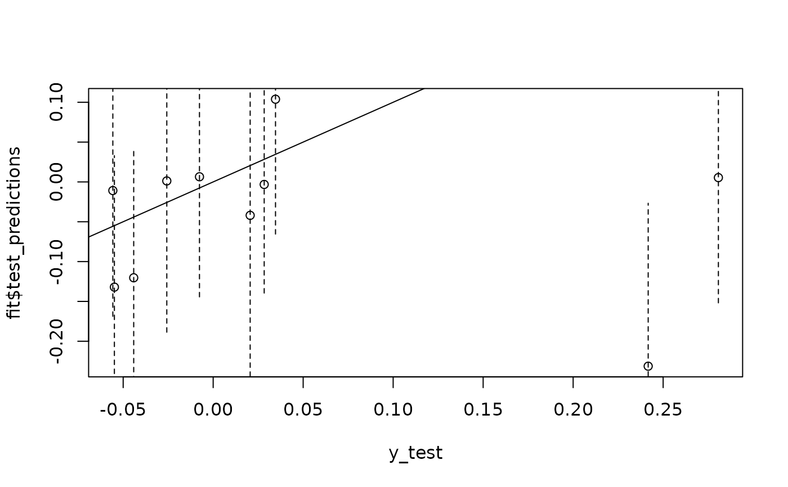
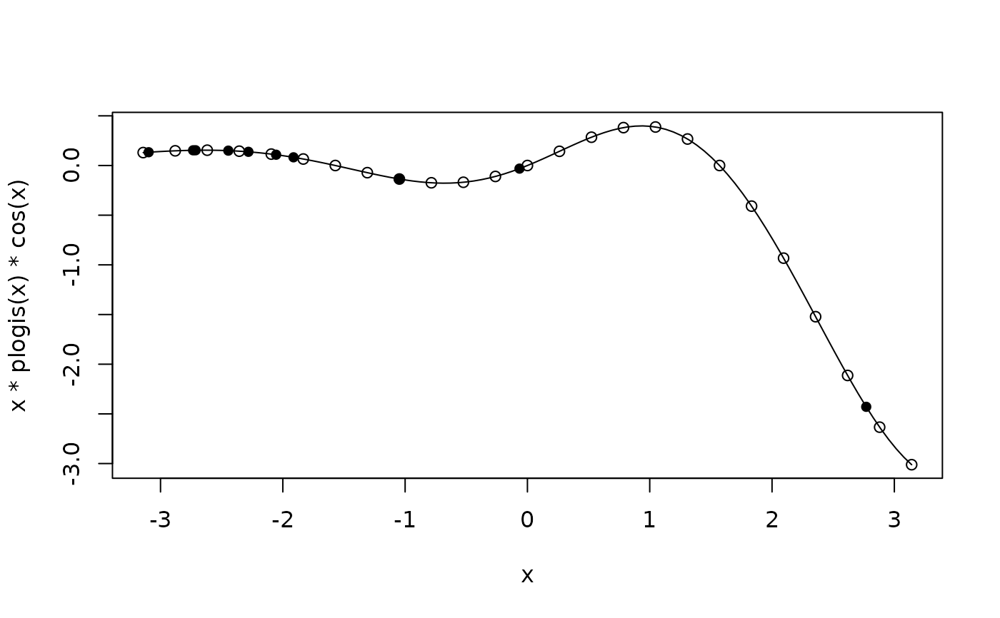

Gaussian Process Fitting to Test Data with Tuned Hyperparameters
Source:R/gaussian_processes.R
fit_gpr.RdThis function generates predictions using a Gaussian process model with one or several Gaussian RBF kernels. The hyperparameters are tuned using the training data by minimising the model's negative marginal log-likelihood.
Usage
fit_gpr(
D2,
training_idx,
test_idx,
y_train,
y_test = NULL,
centre = TRUE,
use_gradient = TRUE,
kernels = "rbf",
runs = 10L,
cores = 1L,
verbose = TRUE
)Arguments
- D2
A matrix, or a list of matrices, containing squared pairwise distances between all objects.
- training_idx
A vector with the row (and column) numbers corresponding to the training entries in
D2.- test_idx
A vector with the row (and column) numbers corresponding to the test entries in
D2.- y_train
A vector with the training outcomes.
- y_test
Optionally, a vector with the test outcomes.
- centre
If
TRUE, the training outcomes are centred around their mean before fitting the model. The mean is then added back to the predictions at the end.- use_gradient
If
TRUE, closed-form expressions for the RBF's gradient are used. Else, the optimiser uses the finite-differences method. Ignored when non-RBF kernels are used.- kernels
A vector with kernels (
"rbf", "matern05", "matern15", "matern25").- runs
Number of independent attempts to find a minimum when optimising the hyperparameters.
- cores
Number of cores used for parallel processing.
- verbose
If
TRUE, progress is shown on the console. Only works ifcores == 1L.
Value
A list containing the predictions for the test objects as well as their variance, the root mean squared error (if the true test outcomes are provided), and the three tuned hyperparameter values.
Examples
# Multiple kernels
N1 <- 25
N2 <- 10
x_train1 <- runif(N1, -pi, pi)
x_train2 <- runif(N1, 0, 1)
x_test1 <- runif(N2, -pi, pi)
x_test2 <- runif(N2, 0, 1)
y_train <- x_train2 * plogis(x_train1) * cos(x_train1)
y_test <- x_test2 * plogis(x_test1) * cos(x_test1)
D2_1 <- outer(c(x_train1, x_test1), c(x_train1, x_test1), "-")^2
D2_2 <- outer(c(x_train2, x_test2), c(x_train2, x_test2), "-")^2
# Single core
fit <- fit_gpr(list(D2_1, D2_2), seq_len(N1), N1 + seq_len(N2),
y_train, y_test, runs = 50)
#> Hyperparameter search 1 of 50.
#> Optimum set at -6.7313219.
#> Hyperparameter search 2 of 50.
#> Hyperparameter search 3 of 50.
#> Current optimum improved from -6.7313219 to -9.0170496.
#> Hyperparameter search 4 of 50.
#> Hyperparameter search 5 of 50.
#> Hyperparameter search 6 of 50.
#> Hyperparameter search 7 of 50.
#> Hyperparameter search 8 of 50.
#> Hyperparameter search 9 of 50.
#> Hyperparameter search 10 of 50.
#> Hyperparameter search 11 of 50.
#> Hyperparameter search 12 of 50.
#> Hyperparameter search 13 of 50.
#> Hyperparameter search 14 of 50.
#> Hyperparameter search 15 of 50.
#> Hyperparameter search 16 of 50.
#> Hyperparameter search 17 of 50.
#> Hyperparameter search 18 of 50.
#> Hyperparameter search 19 of 50.
#> Hyperparameter search 20 of 50.
#> Hyperparameter search 21 of 50.
#> Hyperparameter search 22 of 50.
#> Hyperparameter search 23 of 50.
#> Hyperparameter search 24 of 50.
#> Hyperparameter search 25 of 50.
#> Hyperparameter search 26 of 50.
#> Hyperparameter search 27 of 50.
#> Hyperparameter search 28 of 50.
#> Hyperparameter search 29 of 50.
#> Hyperparameter search 30 of 50.
#> Hyperparameter search 31 of 50.
#> Hyperparameter search 32 of 50.
#> Hyperparameter search 33 of 50.
#> Hyperparameter search 34 of 50.
#> Hyperparameter search 35 of 50.
#> Hyperparameter search 36 of 50.
#> Hyperparameter search 37 of 50.
#> Hyperparameter search 38 of 50.
#> Hyperparameter search 39 of 50.
#> Hyperparameter search 40 of 50.
#> Hyperparameter search 41 of 50.
#> Hyperparameter search 42 of 50.
#> Hyperparameter search 43 of 50.
#> Hyperparameter search 44 of 50.
#> Hyperparameter search 45 of 50.
#> Hyperparameter search 46 of 50.
#> Hyperparameter search 47 of 50.
#> Hyperparameter search 48 of 50.
#> Hyperparameter search 49 of 50.
#> Hyperparameter search 50 of 50.
plot(y_test, fit$test_predictions)
abline(a = 0, b = 1, lty = 1)
segments(x0 = y_test,
y0 = fit$test_predictions - 2 * sqrt(diag(fit$test_variance)),
y1 = fit$test_predictions + 2 * sqrt(diag(fit$test_variance)), lty = 2)

fit
#> $kernels
#> [1] "rbf" "rbf"
#>
#> $test_predictions
#> [1] 0.103819650 -0.132069036 -0.003162020 0.001227841 0.005412415
#> [6] 0.006466601 -0.231317504 -0.120333455 -0.010845450 -0.041972268
#>
#> $test_variance
#> [,1] [,2] [,3] [,4] [,5]
#> [1,] 7.163161e-03 -3.074587e-04 0.0018305542 0.0017310743 1.789838e-03
#> [2,] -3.074587e-04 6.804186e-03 0.0001942065 -0.0002627083 -1.832662e-03
#> [3,] 1.830554e-03 1.942065e-04 0.0046481272 0.0016052214 2.603473e-03
#> [4,] 1.731074e-03 -2.627083e-04 0.0016052214 0.0090127746 -1.649392e-04
#> [5,] 1.789838e-03 -1.832662e-03 0.0026034731 -0.0001649392 6.179768e-03
#> [6,] 8.597651e-05 9.687542e-04 0.0002482526 0.0002122387 -7.382978e-05
#> [7,] 6.731916e-07 -1.739089e-03 0.0003465327 0.0008385609 3.669843e-03
#> [8,] -3.101901e-04 6.669570e-03 0.0001272532 -0.0003451489 -1.754525e-03
#> [9,] -1.675449e-03 -9.226205e-06 -0.0003751851 0.0011681249 -1.241379e-03
#> [10,] -9.622552e-04 2.091820e-03 0.0000906921 0.0019653028 -1.923098e-03
#> [,6] [,7] [,8] [,9] [,10]
#> [1,] 8.597651e-05 6.731916e-07 -3.101901e-04 -1.675449e-03 -0.0009622552
#> [2,] 9.687542e-04 -1.739089e-03 6.669570e-03 -9.226205e-06 0.0020918200
#> [3,] 2.482526e-04 3.465327e-04 1.272532e-04 -3.751851e-04 0.0000906921
#> [4,] 2.122387e-04 8.385609e-04 -3.451489e-04 1.168125e-03 0.0019653028
#> [5,] -7.382978e-05 3.669843e-03 -1.754525e-03 -1.241379e-03 -0.0019230985
#> [6,] 5.682890e-03 1.776530e-03 1.051009e-03 -5.747128e-05 0.0021449764
#> [7,] 1.776530e-03 1.045821e-02 -1.446089e-03 -3.629493e-04 0.0016013236
#> [8,] 1.051009e-03 -1.446089e-03 6.668123e-03 2.502043e-06 0.0021708825
#> [9,] -5.747128e-05 -3.629493e-04 2.502043e-06 6.230363e-03 0.0007568228
#> [10,] 2.144976e-03 1.601324e-03 2.170883e-03 7.568228e-04 0.0102118042
#>
#> $RMSE
#> [1] 0.1799737
#>
#> $length_scale
#> [1] 1.24597125 0.05817039
#>
#> $scaling_factor
#> [1] 0.03429806 0.01700076
#>
#> $noise_variance
#> [1] 0.01004947
#>
#> $nll
#> [1] -9.01705
#>
# Multiple cores
fit <- fit_gpr(list(D2_1, D2_2), seq_len(N1), N1 + seq_len(N2),
y_train, y_test, runs = 50, cores = 2)
fit
#> $kernels
#> [1] "rbf" "rbf"
#>
#> $test_predictions
#> [1] 0.103819530 -0.132069025 -0.003162061 0.001227785 0.005412372
#> [6] 0.006466754 -0.231317784 -0.120333445 -0.010845358 -0.041972322
#>
#> $test_variance
#> [,1] [,2] [,3] [,4] [,5]
#> [1,] 7.163148e-03 -3.074645e-04 1.830546e-03 0.0017310697 1.789838e-03
#> [2,] -3.074645e-04 6.804175e-03 1.942060e-04 -0.0002627060 -1.832664e-03
#> [3,] 1.830546e-03 1.942060e-04 4.648117e-03 0.0016052171 2.603472e-03
#> [4,] 1.731070e-03 -2.627060e-04 1.605217e-03 0.0090127697 -1.649359e-04
#> [5,] 1.789838e-03 -1.832664e-03 2.603472e-03 -0.0001649359 6.179763e-03
#> [6,] 8.597498e-05 9.687478e-04 2.482513e-04 0.0002122379 -7.382846e-05
#> [7,] 6.744015e-07 -1.739088e-03 3.465275e-04 0.0008385579 3.669845e-03
#> [8,] -3.101962e-04 6.669560e-03 1.272527e-04 -0.0003451467 -1.754526e-03
#> [9,] -1.675446e-03 -9.222172e-06 -3.751834e-04 0.0011681231 -1.241379e-03
#> [10,] -9.622598e-04 2.091816e-03 9.068778e-05 0.0019652954 -1.923097e-03
#> [,6] [,7] [,8] [,9] [,10]
#> [1,] 8.597498e-05 6.744015e-07 -3.101962e-04 -1.675446e-03 -9.622598e-04
#> [2,] 9.687478e-04 -1.739088e-03 6.669560e-03 -9.222172e-06 2.091816e-03
#> [3,] 2.482513e-04 3.465275e-04 1.272527e-04 -3.751834e-04 9.068778e-05
#> [4,] 2.122379e-04 8.385579e-04 -3.451467e-04 1.168123e-03 1.965295e-03
#> [5,] -7.382846e-05 3.669845e-03 -1.754526e-03 -1.241379e-03 -1.923097e-03
#> [6,] 5.682883e-03 1.776529e-03 1.051003e-03 -5.747012e-05 2.144970e-03
#> [7,] 1.776529e-03 1.045821e-02 -1.446088e-03 -3.629516e-04 1.601315e-03
#> [8,] 1.051003e-03 -1.446088e-03 6.668113e-03 2.505937e-06 2.170878e-03
#> [9,] -5.747012e-05 -3.629516e-04 2.505937e-06 6.230359e-03 7.568244e-04
#> [10,] 2.144970e-03 1.601315e-03 2.170878e-03 7.568244e-04 1.021179e-02
#>
#> $RMSE
#> [1] 0.1799738
#>
#> $length_scale
#> [1] 1.24597354 0.05817038
#>
#> $scaling_factor
#> [1] 0.03429813 0.01700077
#>
#> $noise_variance
#> [1] 0.01004946
#>
#> $nll
#> [1] -9.01705
#>
# Single kernel
N1 <- 40
N2 <- 10
x_train <- seq(-pi, pi, length.out = N1)
x_test <- runif(N2, -pi, pi)
y_train <- x_train * plogis(x_train) * cos(x_train) + rnorm(N1, sd = 0.5)
y_test <- x_test * plogis(x_test) * cos(x_test)
D2 <- outer(c(x_train, x_test), c(x_train, x_test), "-")^2
fit <- fit_gpr(D2, seq_len(N1), N1 + seq_len(N2), y_train, y_test,
runs = 50L, cores = 2)
curve(x * plogis(x) * cos(x), -pi, pi,
ylim = range(
c(y_train, fit$test_predictions + 2 * sqrt(diag(fit$test_variance)),
fit$test_predictions - 2 * sqrt(diag(fit$test_variance)))
)
)
points(x_train, y_train, pch = 1)
points(x_test, fit$test_predictions, pch = 16)
segments(x0 = x_test,
y0 = fit$test_predictions - 2 * sqrt(diag(fit$test_variance)),
y1 = fit$test_predictions + 2 * sqrt(diag(fit$test_variance)))

fit
#> $kernels
#> [1] "rbf"
#>
#> $test_predictions
#> [1] 0.12674552 0.04401568 0.20231939 -2.46794511 0.16431599 0.10242352
#> [7] -0.18537079 -0.24208345 0.06769749 0.16698465
#>
#> $test_variance
#> [,1] [,2] [,3] [,4] [,5]
#> [1,] 0.0281285604 0.0177677875 0.0099659028 1.194188e-04 2.488317e-02
#> [2,] 0.0177677875 0.0271209087 -0.0068130421 1.947964e-04 7.630749e-03
#> [3,] 0.0099659028 -0.0068130421 0.0638297528 -1.127562e-04 2.912012e-02
#> [4,] 0.0001194188 0.0001947964 -0.0001127562 3.185627e-02 -1.191073e-05
#> [5,] 0.0248831663 0.0076307486 0.0291201183 -1.191073e-05 3.021269e-02
#> [6,] 0.0269533121 0.0226592448 0.0016738430 1.896106e-04 1.991931e-02
#> [7,] -0.0038297511 0.0069167958 0.0009365653 -5.542268e-04 -3.806257e-03
#> [8,] 0.0008284897 -0.0031454584 0.0001192445 1.245964e-03 1.461839e-03
#> [9,] 0.0221047842 0.0265981766 -0.0050795255 2.261800e-04 1.227208e-02
#> [10,] 0.0243655578 0.0068038493 0.0308315900 -2.091815e-05 3.043374e-02
#> [,6] [,7] [,8] [,9] [,10]
#> [1,] 0.0269533121 -0.0038297511 0.0008284897 0.022104784 2.436556e-02
#> [2,] 0.0226592448 0.0069167958 -0.0031454584 0.026598177 6.803849e-03
#> [3,] 0.0016738430 0.0009365653 0.0001192445 -0.005079525 3.083159e-02
#> [4,] 0.0001896106 -0.0005542268 0.0012459640 0.000226180 -2.091815e-05
#> [5,] 0.0199193134 -0.0038062568 0.0014618386 0.012272082 3.043374e-02
#> [6,] 0.0281237871 -0.0019736190 -0.0002016421 0.025912626 1.914147e-02
#> [7,] -0.0019736190 0.0262216373 0.0038514489 0.002847128 -3.665881e-03
#> [8,] -0.0002016421 0.0038514489 0.0260416749 -0.002045419 1.451790e-03
#> [9,] 0.0259126256 0.0028471277 -0.0020454188 0.027632931 1.138555e-02
#> [10,] 0.0191414684 -0.0036658812 0.0014517904 0.011385553 3.072528e-02
#>
#> $RMSE
#> [1] 0.07643067
#>
#> $length_scale
#> [1] 1.151217
#>
#> $scaling_factor
#> [1] 1.463965
#>
#> $noise_variance
#> [1] 0.1894823
#>
#> $nll
#> [1] 34.3079
#>
fit$RMSE
#> [1] 0.07643067